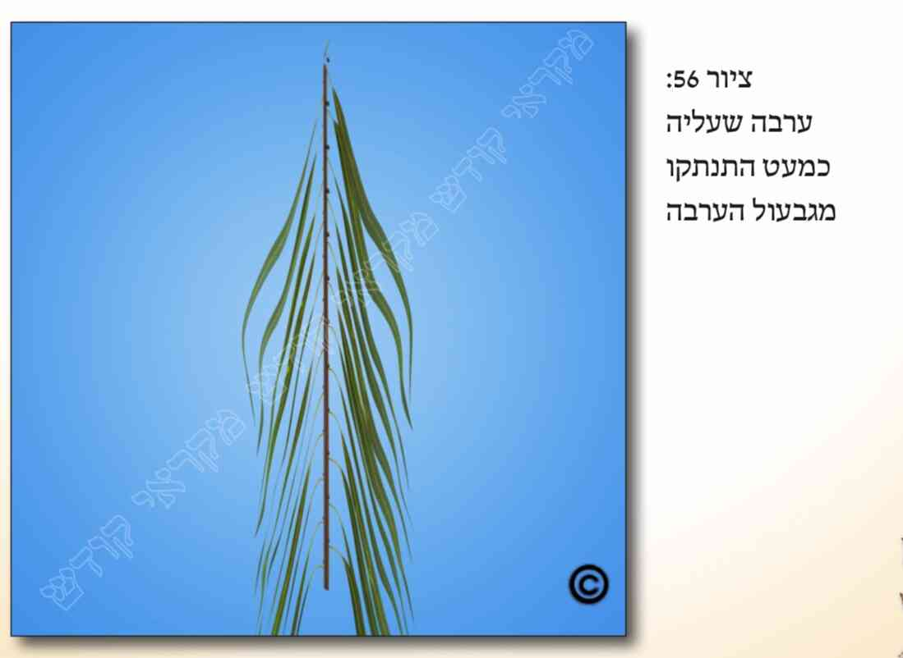
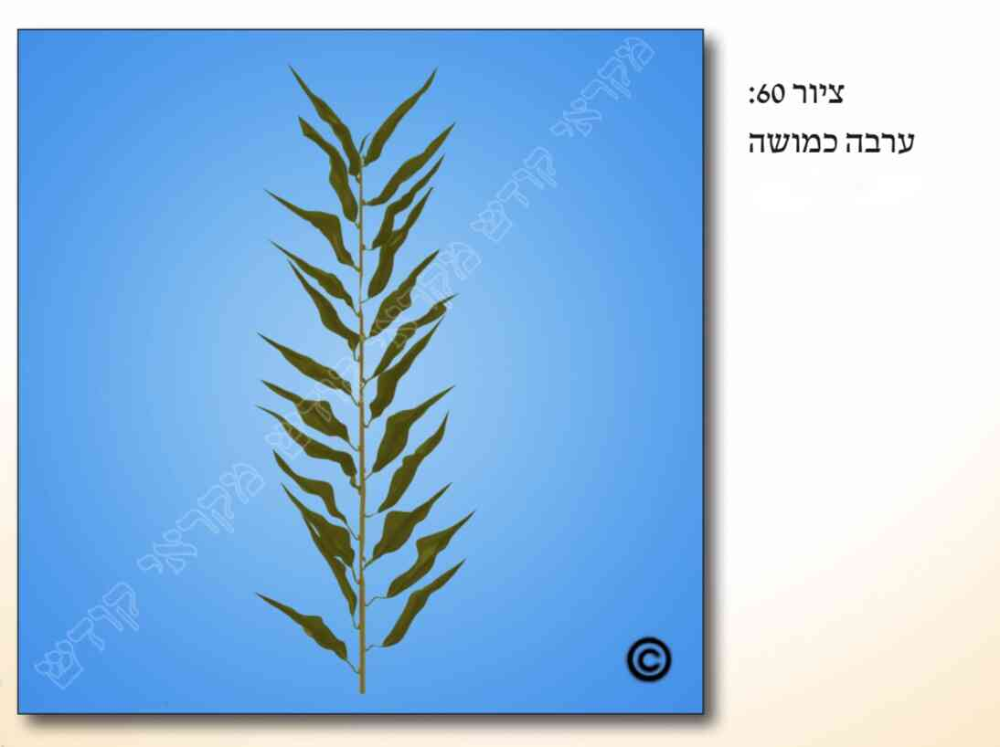
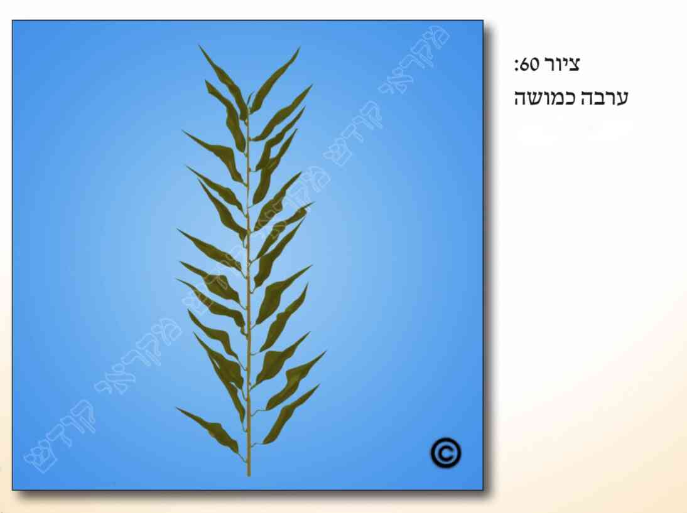

א. כתוב בתורה (ויקרא פרק כ"ג פס' מ'): "ולקחתם לכם ביום הראשון... וערבי נחל, ושמחתם לפני ה' אלקיכם שבעת ימים", וקיבלו רבותינו זכרונם לברכה במסורת מהדורות שלפניהם, דור אחר דור, שכוונת הפסוק "ערבי נחל" הינה לערבה.
ב. ישנם כמה דינים עיקריים לכשרות הערבה: 1) מהותה וצורתה. 2) שיעור אורכה. 3) צריך שיהא לה דין "הדר" (הכולל שלא תהא יבשה, שראשה אינו קטום, ושלא נפרצו עליה. 4) שלא תהא גזולה. 5) כמה ערבות יש ליטול. וכפי שבס"ד יתבאר לקמן.
ג. כיוון שהערבה דומה לצמח הצפצפה, לכן חכמינו זכרונם לברכה קבעו שלושה סימנים שצריכים להיות בערבה, על מנת שנדע לזהות שאין זה מין אחר. ואלו הם הסימנים של הערבה:
1) עלה הערבה משוך ומאורך מעט (ואילו עלה הצפצפה הינו עגול).
2) הקנה של הערבה הינו אדום או ירוק (ואילו קנה הצפצפה הינו לבן).
3) לעלה הערבה ישנם שוליים (היינו שפתיים) חלקים וישרים (ואילו עלה הצפצפה קצותיו בעלי שיניים כמגל). וראה בציורים (
 ).
).
ד. למרות שבתורה נקרא מין זה בשם "ערבי נחל", בכל אופן אין חובה לקחת דווקא ערבות מאותן הגדלות בנחלים, אלא אפשר ליטול גם ערבות הגדלות במקומות אחרים.
ה. עוד בענין מהות הערבה, ראה כאן במקורות.
ו. צריך ליטול שתי ערבות כשרות, ואם נטל פחות, לא יצא ידי חובה. למנהג האשכנזים כשחוזר ליטול שוב שתי ערבות, כראוי, יברך על הנטילה השניה, ולמנהג הספרדים לא יברך על הנטילה השניה, כמבואר בס"ד לקמן (בפרק י"א סעיף נ"ב).
ז. מעיקר הדין מותר להוסיף וליטול יותר משתי ערבות, אך כבר נהגו ליטול רק שתי ערבות.
ח. דיני שיעור אורך הערבה הינם כדיני אורך ההדס. וגם בערבה השיעור נמדד בגבעול האמצעי לבדו, ללא עליה העליונים. ראה על כך לעיל (בפרק ג' סעיפים ט"ו, ט"ז, י"ז, וי"ט), לגבי השיעור הארוך ביותר והקצר ביותר, לכתחילה, בשעת הדחק ובדיעבד. וראה לקמן (בפרק ט' בסעיפים י"ד וט"ו) שבאגידה צריכים ראשי הערבות להיות נמוכים מעט מראשי ההדסים [ראה בציורים (
 )] .
)] .
ט. כפי שכתבנו לעיל (בסעיף ב') צריך שיהא לערבה דין "הדר". ודבר זה (לחלק מהפוסקים) כולל את דין נשירת העלים מהערבה, עד כמה ומהיכן נשרו העלים שלה, כך שהיא תפסל.
י. לכתחילה צריכה הערבה להיות שלימה, ללא נשירת עלים כלל. ולכן יש להזהר שלא יתלשו עלים בעת החלפת הערבות באגודה [וראה לקמן (בסעיף כ') ובציורים (
 ,
,
 )] , וכן בעת הנענועים.
)] , וכן בעת הנענועים.
יא. אין הערבה נפסלת אלא אם נשרו רוב העלים משיעורה ההכרחי שבחלקה עליון [ראה בציורים (
)] . ויש מי שכתב, שאם אין מספיק עלים באורך זה, והערבה הינה ארוכה משיעור זה, ניתן לצרף גם את העלים התחתונים יותר המפוזרים לאורך הערבה כדי שיהא רובה עם עלים [ראה בציורים (
 )] . ויש מהפוסקים שלא הקלו בכך.
)] . ויש מהפוסקים שלא הקלו בכך.
יב. גם לגבי ערבה (כמו לגבי ההדס, לעיל בפרק ג' סעיף כד) הסתפקו הפוסקים אם את רוב הערבה הצריכה להיות מכוסה בעלים, יש לשער לפי אורך הגבעול (שיהא מכוסה בעלים) או לפי מספר העלים, שלא ינשרו רובם [ראה בציורים ( )] . ויש מי שכתב שיש להחמיר כשתי הדעות.
יג. יש אומרים שעלים שנדלדלו ומתכופפים כלפי מטה [ראה בציורים ( )] , או שכמעט התנתקו מגבעול הערבה [ראה בציורים (  )] , או שחסר רוב העלה [ראה בציורים ( )] , או שיש חתך ברוב אורך העלה [ראה בציורים ( )] , הריהם פסולים ונחשבים שנשרו מהערבה. ואם ישנן ערבות אחרות, ורוב העלים הינם כך, יש להחמיר כדעה זו.
יד. עלה שיש בו נקב אחד או אפילו הרבה נקבים הריהו כשר.
טו. למנהג האשכנזים, ערבה שנשרו רוב עליה הינה פסולה כל שבעת ימי החג, ורק בשעת הדחק, כשאין בנמצא באזור ערבה אחרת כשרה, יטלוה בלא ברכה, בין ביום טוב הראשון ובין בימי חול המועד , ולמנהג הספרדים ערבה כזו פסולה רק ביום טוב הראשון של החג, ובשאר ימי החג רשאים הם ליטלה בברכה (וראה עוד כאן במקורות).
טז. כפי שכתבנו לעיל (בסעיף ב'), גם ערבה יבשה הינה פסולה, משום שאינה "הדר". ובס"ד נפרט דין זה.
יז. לכתחילה יש ליטול ערבה לחה, רעננה, ירוקה ונאה, שאין בה שום יובש.
יח. אין הערבה נחשבת ליבשה אלא אם התייבשה לגמרי, באופן שכלה כל צבע הירוק שבה [ראה בציורים (
 )] . אך אם היא רק כמושה הריהי עדיין כשרה [ראה בציורים (

)] .
)] . אך אם היא רק כמושה הריהי עדיין כשרה [ראה בציורים (

)] .
יט. אין הערבה נפסלת בשל יובש העלים שלה אלא אם כן התייבשו רוב העלים. אך אם נותרו בה עלים כשרים ברוב שיעורה ההכרחי שבחלקה העליון, הריהי כשרה. ולגבי ערבה הארוכה יותר מהשיעור ההכרחי, שיש בה עלים כשרים המכסים את רוב שיעורה ההכרחי, אך הינם מפוזרים לכל אורכה, דינה כדלעיל (בסעיף י"א).
כ. יש נוהגים להחליף כל יום את הערבות בערבות חדשות ורעננות, ומנהג טוב הוא, אך אין חובה בכך, אלא אם כן הן נפסלו. ובכל מקרה שמחליפים את הערבות (וכן את ההדסים), יש לחתוך לגמרי את הקשר האוגד, להוציא את הערבות הישנות ולאגוד מחדש את החדשות [ראה בציורים (
)] , ולא למשוך מתוך האגידה את הישנות ולדחוף את החדשות [כבציורים (
)]. וראה גם לעיל בפרקנו (בסעיף י'). ועיין עוד במקורות לגבי אופן האגידה המותר ביום טוב.
כא. למנהג האשכנזים ערבה יבשה פסולה כל שבעת ימי החג. ובשעת הדחק, כשכלל אין ערבות אחרות באזור, במיקרים מסוימים יטלו אותן אף בברכה. והאם יש להקל בכך יותר בימי חול המועד ראה כאן במקורות. ולמנהג הספרדים בכל מקרה ניתן ליטול ערבה יבשה ולברך עליה בימי חול המועד.
כב. ערבה שנקטם ונחתך ראשה הריהי פסולה.
כג. דין נקטם ראש הערבה אמור דווקא אם נקטם הגבעול שהעלים יוצאים ממנו [ראה בציורים (
 )] .
)] .
כד. ערבה שנשרו מיעוט מעליה, מעיקר הדין הריהי כשרה, ואפילו שנשר העלה העליון. ונחלקו הפוסקים אם לכתחילה יש להמנע מליטול אותה. ונהגו רבים להדר וליטול ערבה שיש עלה עליון המלבלב ויוצא מראשה (הנקרא "לַבְלוּב") [ראה בציורים (
 )] .
)] .
כה. זמן הפסול של ערבה שנקטם ראשה הינו כזמן הפסול של ערבה יבשה, כנ"ל (בסעיף כ"א).
כז. אחת הבעיות המצויות והקשות ביותר בדיני ערבה הינה ערבה גזולה, שעלולים אנשים מסוימים לקטוף בלי רשות ערבות ממקומות שאינם הפקר, כגון מחצרות פרטיות, ולמוכרם לרבים, ובכך להכשילם בביטול מצוות נטילת ארבעת המינים, ובברכות לבטלה. ראה על כך, ועל שאר יתר דיני ערבה גזולה (כגון מה נחשב גזול, ומהו זמן חלות פסול זה) לקמן (בפרק ו' הערות כ"ו וכ"ז, ובפרק י' סעיפים כ"ז ואילך, וסעיפים מ"ח ומ"ט).
כח. עוד מדיני הערבה ראה כאן במקורות.
כט. חוץ מנטילת הערבה בכל ימי החג, יחד עם שאר שלושת המינים, נוטלים ביום הושענא רבה (שהוא היום השביעי של החג) ערבות נוספות [ראה בציורים ( )] , כדי לקיים בהם "מצוות חבטת הערבה".
ל. דין הערבות הכשרות ל"מצוות חביטת הערבה" ראה כאן במקורות.
&הערות:
[1] א. ברייתא בסוכה (דל"ג, ב' ודל"ד, א'). שו"ע (סי' תרמ"ז ס"א).
[2] ב. ברייתא בסוכה (דל"ג, ב' ודל"ד, א'). מרן (סי' תרמ"ז ס"א).
[3] ג. מרן ורמ"א (סי' תר"נ ס"א).
[4] ד. משנה סוכה (דל"ג, ב'). מרן (סי' תרמ"ז ס"ב).
[5] ה. משנה ושו"ע (שם).
[6] ו. משנה ושו"ע (שם).
[7] ז. משנה סוכה (דל"ג, ב') מרן (סי' תרמ"ט ס"א).
[8] ח. מרן (סי' תרנ"א סעי' א' וט"ו).
[9] ט. שלושת הסימנים נזכרו בברייתות בסוכה (דל"ג, ב' ודל"ד, א'). וכ"פ מרן (סי' תרמ"ז ס"א).
נחלקו הפוס' אי בעי שיהא בערבה את כל ג' הסימנים או די בא' מהם, ודנו גם האם בכה"ג, שמצא רק חלק מהסימנים, הצריך לחפש גם את שאר הסימנים.
שעפי"ד התוס' (בדל"ד, א' ד"ה "קנה") כ' הב"ח (ברס"י תרמ"ז) שמשמע שדי שיש בערבה ב' סימני כשרות [כך הבינו מדבריו במ"ב - עוז"ו (בהערות על המ"ב סי' תרמ"ז סק"ב הערה י"ד)].
אלא שפוס' רבים כתבו שצריך את כל הסימנים, ואם חסר א' מהם ה"ז פסול. שכ"כ במחזור ויטרי (סי' שס"ו), וכ"כ הפמ"ג (בא"א סק"א), וכ"כ הביכור"י (סק"א).
ומאידך השפ"א (בסוכה שם) כ' שכדי לפסול צריך שיהיו בו את כל ג' הסימנים שאמרו חז"ל שאין זו הערבה. והוסיף שמדברי רש"י מתבאר כפמ"ג שצריך את כל הסימנים. וע"ע ע"כ בשבט"ה (ח"ח סי' קמ"ט), ובמ"ב - עוז והדר (שם).
ובאותו ענין יש להוסיף, שהביכור"י כ' שאין מצוי שיהא רק סימן א' אם אין את שאר הסימנים. והיינו שצריך את כל הסימנים, אך די אם רואים שיש סימן א', ואז מסתמא יש גם את השאר. הב"ד המ"ב (סי' תרמ"ז סק"ב) וכה"ח (סק"ד). והקשה עליו כה"ח דהוא תימא, וכי ראה את כל האילנות שבעולם. ועוד, א"כ מדוע נתנו חז"ל הקדושים ג' סימנים, כיוון שאין מצוי זה בלא זה, אלא דמשמע שמצוי זה בלא זה. עכ"ד. ולי הקטן נראה בס"ד לתרץ את קושיית הרב כה"ח על הביכור"י, שחז"ל נתנו את ג' הסימנים, דאם לא ברירא לן שיש סימן א', הרי שתחפש את הסימן האחר ומשתמצאנו תדע שזו הערבה. וצ"ע.
ובאשר ללקיחת ענף אקליפטוס לשם מצוות נטילת הערבה. הגרצ"פ פראנק זצ"ל (הב"ד בס' כשרות ארבעת המינים, עמ' קכ"ט) כתב שהמהרי"ל דיסקין דן להכשירם למצוות הדמ"י. ואילו הגרצ"פ פראנק זצ"ל (בשו"ת הר צבי, חיו"ד סי' קפ"א) חלק עליו, משום שרוב גידולו של האקליפטוס אינו על הנחלים. ועוד, שכתוב במדרש שלערבה אין ריח, ואילו לאקליפטוס יש ריח [אמנם ע"כ תירץ בספר כשרות ארבעת המינים (עמ' ק"ל) שכמו שהתפא"י הכשיר הדס שאין בו ריח, כך ניתן להכשיר ערבה שיש בה ריח כאקליפטוס. אמנם חכ"א העיר, שלכאו' יש לחלק בין הדס ללא ריח, אך צורתו צורת הדס גמורה, לבין אקליפטוס שצורת העץ והפרחים שונה מערבה וכל הדמיון הינו רק בצורת העלים. עכ"ד]. וראה במ"ב - עוז והדר (רס"י תרמ"ז הערה ב') שהביא דברי ספר ארץ טובה (סי' כ"ד) שחקר אי סימנים אלה הינם סימנים על כשרותה של הערבה או שהם מהותה של הערבה. והוכיח משו"ע הגר"ז שסימנים אלה הינם הוכחה שזה מין הערבה ולא רק סימנים על כשרותה. לכן אף אם לא היה ידוע לנו על כשרות העץ, מ"מ הסימנים מוכיחים לנו שהוא מהמין הכשר. עכ"ד.
ועתה ראיתי שכתוב בשם ידידי הג"ר יהודה הלוי עמיחי שליט"א (מראשי מכון התורה והארץ), שלדעתו יוצאים י"ח נטילת דמ"י ע"י ענף אקליפטוס, משום שלדעת הרמב"ם הסימנים החיצוניים הם הקובעים האם העץ נקרא ערבה [ציינו למאמרו בקונטרס אמונת עתיך (גליון 12)]. אך כבר כתבנו לעיל שק"ק ע"כ שהרי ערבה אין לה ריח ואילו לענפי האיקליפטוס יש ריח. אך אין המאמר מצוי תח"י, והבנתי שבגליון הבא הרב הגאון ר' יהודה זולדן שליט"א חלק ע"כ, משום שהרמב"ם כתב שכל הדמ"י הינם הלל"מ, ולכן לא ניתן לסמוך רק על הסימנים, ובפרט שאין מסורת ליטול את ענפי האיקליפטוס כערבה. ע"כ. ואין הדברים מצויים תח"י.
ומאידך עיי"ש במ"ב - עוז והדר שכתבו בשם האחרו' (בלי לציין מי הם) שאף עצים הדומים לערבה שיש בהם את סימני הערבה, כגון האקליפטוס, ערבה בוכיה, עץ השיטה, ועוד מיני עצים הדומים לערבה, שאין לצאת בהם י"ח, שאין לנו ליטול אלא רק מה שנהגו בו אבותינו. עיי"ש. וא"כ זו מחלו' אי שרי לצאת ע"י ענף האקליפטוס וכדו'. ומבלי לעיין בסוגיה נלע"ד שאין ליקח ענפי אקליפטוס במקום ערבות, מהטעם הנ"ל, שכבר נהגו אבותינו ליקח דווקא ערבות. וכבר כתבו המ"א והמ"ב שערבות מצויות. ורק יש לדון ע"כ גבי שעה"ד כשאין ערבות כשרות. ואכמ"ל.
[10] י. ברייתות בסוכה (דל"ג, ב' ודל"ד, א'). מרן (סי' תרמ"ז ס"א).
[11] יא. ברייתא בסוכה (דל"ד, א'). וגבי צבע אדום, ג"ז שם, וכ"כ מרן (שם). וגבי צבע ירוק כ"כ הרמ"א (בסי' תרמ"ז ס"א).
וכתבו הפוס' שצבע קנה הערבה יכול להיות בכל הצבעים חוץ מלבן [מ"ב (סק"ב)].
[12] יב. ברייתא (דל"ד, א') ומרן (שם ס"א).
ומה שכתבנו שהכוונה לשוליה וקצוותיה של הערבה והצפצפה, כ"כ המ"ב (סק"א) עפ"י הפוס', דהיינו לשפת העלה.
ומ"מ יש סוג נוסף, שאין פי העלה שלו חלק ואינו משונן כמסור, אלא יש בו תלמים קטנים עד מאוד כמו פי מגל קטן, וגם הוא כשר [ברייתא (דל"ד, א') וכמו שפירש אביי. וכ"פ מרן (בסי' תרמ"ז ס"א). עיי"ש במ"ב (סק"ה וו')].
הצפצפה פסולה מדאו', שאינה בכלל מין הערבה [מ"ב (סק"ד). שעה"צ (סק"ג)].
[13] יג. בגמ' (דל"ג, ב') מצינו ב' ברייתות גבי ני"ד. בברייתא אחת דרשו: "ערבי נחל" – הגדילין על הנחל. ובברייתא שניה דרשו: "ערבי נחל" – אין לי אלא ערבי נחל. של בעל ושל הרים מנין. ת"ל ערבי נחל מ"מ. ע"כ. והיינו אף מאותן שאינן גדלות על הנחל. ובשל כך נחלקו הראשונים בדין זה:
לד' רש"י (ד"ה "ערבי נחל") הברייתא הראשו' דנה גבי מציאות של לכתחי', והשניה עוסקת גבי בדיעבד. דלכתחי' יש ליקח מערבות שגדלו סמוך לנחל, ומיהו אף אם נטל ערבות בשל בעל (והיינו שלא גדלו ממימי נחל, אלא ממימי גשמים), ג"כ כשרה.
לד' תוס' (דל"ד, ב' ד"ה "ורבנן") זו מחלו' תנאים, והלכה כברייתא הראשו', וצריך להיזהר שלא ליטול ערבה ללולב אא"כ גדלה על הנחל. ומתיבת "ערבֵי" לומדים שיש ליטול ב' ערבות. ולא שניתן ליטול גם ערבות שאינן מנחל.
ומאידך הרא"ש (בסוכה פ"ג סי' י"ג) כ' שאף רבותיו לא לקחו דוקא ערבות מנחל, וא"כ ערבה שגדלה שלא על נחל הינה כשרה לכתחי'. ומ"ש בברייתא הראשו' הכוונה לסוג של ערבה משום שהיא בדר"כ גדלה בנחל. ע"כ. וכן דעת הרמב"ם (פ"ז מלולב ה"ג).
ונביא בס"ד עוד מדברי הפוס' בהא:
בס' תניא הקדמון (הל' לולב) כ' שמדטרח הכתוב לכתוב "ערבי נחל", ולא כ' "ערבי" סתם, שמע מיניה מצוה מן המובחר בערבי נחל, וצריך לחזור אחריהם. עכ"ל. והטור (בסי' תרמ"ז) כ', שרוב המפרשים פירשו שלכתחי' צריך לחזר אחר הגדלה על המים, אלא שבדיעבד יוצא גם בשל הרים.
ואכן מרן בשו"ע (בסי' תרמ"ז סעי' א') פסק שנקראו ערבי נחל בגלל שמין זה גדל על הנחלים, אך גם אותן ערבות הגדלות במדבר או בהרים, כשרות הן. ע"כ. והרמ"א בד"מ (בסי' תרמ"ז) כ', שמדברי התוס' משמע שאף בדיעבד פסול משל הרים, אם אינה גדלה על המים. ע"כ.
והביכור"י (בסי' תרמ"ז) כ' שבשיש שניהם לפניו, טוב יותר ליקח הגדלה על הנחל, דיוצא בה ידי חובת כל הפוס'. ע"כ. וכעין זאת כתבו גם כה"ח (בסי' תרמ"ז) בשם מהר"י נבון (דף קט"ז), וכ"כ המט"א (בסי' תרמ"ז). ואילו בעל הנזירות שמשון (על השו"ע סי' תרמ"ז) צידד יותר להחמיר בכך, וכ' שרוב הפוס' פוסלים לכתחי' (ערבות שאינן גדלות בנחל), לכן יש להחמיר שהוא מדאו'. ע"כ. אך המקור חיים (לבעל החוו"י) כ' שכל הירא והחרד יחזיר על זו הגדלה על הנחל. ע"כ. ובחיי אדם (כלל ק"נ סעי' ט') כ' שי"א שלכתחי' יהדר ליקח מאותן הגדלים על הנחל. ע"כ.
נמצאנו למדים שישנן דעות שונות גם באחרו' עד כמה יש להחמיר בכך.
והמ"ב (בסק"ג) בשל ד' רש"י הנ"ל, כתב שיותר טוב ליקח ערבות שגדלו בנחל, אך הוסיף שמהט"ז משמע שא"צ לדקדק בכך. עכ"ד. וע"ע בכה"ח (סק"ה).
יש לציין שמ"מ מצינו כמה אחרו' שכתבו לחוש לד' רש"י ומהיות טוב נכון היכא דאפשר ליקח ערבות הגדלות בנחל, לצאת י"ח כל הפוס' [כ"כ כה"ח (סק"ו) בשם מהר"י נבון בס' גט מקושר. וכ"כ בס' בית השואבה. וכ"כ הגר"א נבנצל שליט"א (בהערות ביצחק יקרא על המ"ב הנ"ל. עיי"ש שתמה מדוע בכל שאר דיני הדמ"י מהדרים לצאת י"ח כל השיטות ואילו בזה לא מצינו שמהדרים, למרות שיש שיטות בראשו' שכך יש לנקוט, שיש ליטול דווקא ערבה הגדלה בנחל)]. ומ"מ למעשה לא ראינו שמחמירים בזה [כ"כ הג"ר משה לוי זצ"ל בהערות איש מצליח (על המ"ב סק"ג הערה 3)].
[14] יד. כתבו הפוס', שערבה מורכבת פסולה [ח"א (כלל קנ"ב ס"ב). ס' ישועת יעקב (סי' תרמ"ט סק"ג). ור' בשו"ת שבות יעקב (או"ח סי' ל"ו). הב"ד בסא"ה (במיל' לדיני ערבה, סקי"א)].
[15] טו. משנה סוכה (דל"ד, ב') וכרבי ישמעאל. וכ"פ מרן (סי' תרנ"א ס"א) ובשעה"צ (סי' תרמ"ז סק"ו).
[16] טז. כ"כ מרן הגחיד"א בברכ"י (סי' תרנ"א סק"ב) בשם מרן החבי"ב בכנה"ג, ושכ"כ בס' בי"ד. וכ"פ מרן הח"ח במ"ב (בסי' תרנ"א סק"ג).
[17] יז. המ"ב (שם) בשם הפוס' הנ"ל. ואיזו ברכה יברך, ר' במ"ב (סי' תרנ"א סקנ"ו) ולקמן (בפרק י"א סעיף נב).
[18] יח. כ"כ מרן הגחיד"א ביוסף אומץ (סי' ב'), והשיג שם ע"ד הרב בי"ד (שהביאם בס' ברכ"י, כנ"ל בהערה ט"ז) והסיק שלא יברך על הנטילה החוזרת, כיוון שלד' כמה גדולים כבר יי"ח בנטי' הראשונה. וכ"כ הרב יפ"ל להשיג ע"ד הבי"ד, והסיק שלא יברך שוב, מהטעם הנ"ל. וכ"פ הרב כה"ח (בסי' תרנ"א סק"ה), וכ"כ בהערות איש מצליח (לסי' תרנ"א של המ"ב סק"ג הערה 5).
[19] יט. מרן (סי' תרנ"א סט"ו).
[20] כ. כ"כ מרן (שם בסט"ו) שהמדקדקים אינם מוסיפים על ב' ערבות. וכ"כ הרמ"א בד"מ (בסקט"ו) בשם המנהגים. וכ"כ כבר המקובלים בהקדמת תיקוני הזוה"ק, ובזוה"ק (פר' פנחס דרנ"ו, א'), בס' מגיד מישרים למרן ז"ל (פר' "אמור"), בשעהכ"ו (דק"ה ע"ג ודק"ו), בה"ל (סס"י תרנ"א), כה"ח (סי' תרנ"א ס"ק א' וקל"ד) וש"פ.
וכמה טעמים נאמרו מדוע בעי דווקא ב' ערבות. ר' בה"ל וכה"ח (שם) בשם הפוס'.
ומ"מ יש מקרים שכן רשאי, ואף רצוי להוסיף וליקח יותר מב' ערבות, והוא כאשר יש לו קצת ספק על איזה בד של ערבה (או הדס), או שרואה שעליהם מאוד רכים ועלולים ליפול, הרי שבאופן כזה פשוט שיוכל להוסיף כמה שירצה, ואף המדקדקים במצוות לא ידקדקו להמנע מלהוסיף עוד ערבות [בה"ל (סס"י תרנ"א ד"ה "והמדקדקים")]. ומ"מ לכתחי' יזהר ליקח ערבות והדסים טובים שלא יצטרך להוסיף (הערות איש מצליח שם).
[21] כא. עפ"י מרן (סי' תר"נ סעי' א' וב'). וגם גבי ערבה, שיעורה נמדד בגבעול ולא בעלים העליונים [כן עולה מדברי המ"א (סי' תרמ"ז סק"ב) והמ"ב (סק"י)]. וגבי נשר העלה העליון, אי נפסלה הערבה מדין נקטם ראשה, ראה לקמן (בסעיף כ"ד).
[22] כב. שכ"כ מהרי"ו והרמ"א (סי' תרנ"א ס"א), וכמו שכתבנו בס"ד לקמן (בפ"ט הערות י"ד וט"ו) ועיי"ש הטעמים לכך [הדס גבוה כי נזכר תחילה בפס', ועוד כדי שיראוהו כשמברך עליו ולא יאמרו שמברך בלא הדס (לבוש. כה"ח סקכ"ד, וש"פ)]. ועיי"ש שאין להגביה הערבה יותר מההדס, ולא לחפות ההדס בערבה, והמגביהו והמחפהו בערבה עובר על דברי חכמים ומסתכן בעצמו [רש"י בס' הפרדס. יפ"ל. כה"ח (סי' תר"נ סקכ"ה)].
[23] כג. הנה טעם פסול נשירת רוב עלי הערבה תלוי במחלו' הראשו' והאחרו'. מ"מ נראה שלרוב הראשו' טעם הפסול הינו משום שאינו הדר. שאמנם הריטב"א (בסוכה דכ"ט, ב') כתב הטעם משום שעי"כ אין שמו עליו. וכ"כ הגר"ז והח"א. מ"מ בדברי רבינו מנוח מתבאר שטעם הפסול הינו משום הדר. וכן מתבאר כבר מדברי רש"י (בדכ"ט, ב' ד"ה "נפרצו"). ומדברי הרה"מ (פ"ח מלולב ה"ט) עולה שזו גם ד' הרמב"ם. וכ"מ מהט"ז (סי' תרמ"ו סק"ו). וגם בשו"ת פני יהושע (ח"א או"ח סי' ג') מתבאר שזו מחלו' [הב"ד המ"ב (סק"י) ושעה"צ (סקי"א)].
אגב זאת העיר חכ"א שליט"א, שלמרות שהערבה נמשלה לפשוטי העם, שאין לה לא טעם ולא ריח [ראה כעין זאת במדרש רבי תנחומא (פר' "אמור") שבינונים או שהפשוטים שבישראל נמשלו לערבות], אפ"ה גם בה יש את החיוב והצורך שתהיה מהודרת, שמ"מ הריהי מייצגת חלק מעם ישראל.
ומ"מ עיקר דין פסול הערבה בשל נשירת העלים איתא במשנה סוכה (דל"ג, ב') ובשו"ע (סי' תרמ"ז ס"ב).
ועוד נציין, שגבי המשנה ש"נפרצו עליה, פסולה", אמנם לד' רוב הראשו' הכוונה שנשרו עליה ממקום חיבורם, כמבואר בב"י (סי' תרמ"ז) בשם רש"י והרא"ש. וכ"כ בביאור הגר"א. מ"מ לד' הרה"מ (פ"ח ה"ו) נפרצו עליה הכוונה לנחלקו, נדלדלו או נסדקו, וכדלקמן (בסעי' י"ג) עפ"י המ"ב (סק"ט). אך נראה (עפ"י הנ"ל) שגם הרה"מ ס"ל דהוא מדין הדר.
[24] כד. כ' המ"א (סי' תרמ"ז סק"ג) שמלשון המשנה שאמרה ש"נשרו מקצת עליה... כשרה", משמע שכ"ה רק בדיעבד. אך לכתחי' אין כדאי ליקח ערבה שנשרו עליה, אלא דווקא ערבה שכל העלים שלה עליה. והא"ר (סי' תרמ"ז סק"ו) חלק ע"כ וכ' שכשרה היינו לכתחי'. ובמ"ב (סי' תרמ"ז סקי"א) הביא דבריהם וכ' שטוב להדר לכתחי' בזה כיוון שממילא ערבות מצויות.
[25] כה. כ"כ המ"א והמ"ב (רסק"ח). כדלקמן בפרקנו (בהערה מ"ט) וכנ"ל (בפרק ט').
[26] כו. מ"ב (סק"ח). והוסיף, שבפרט בדמ"י של קהל שיד הכל ממשמשין בהם, מצוי מאוד שנושרין רוב העלים ע"י נענוע של איזה אנשים, וממילא שאר האנשים שמברכים אח"כ הרי שגם אינם יוצאים י"ח וגם מברכים ברכה לבטלה. לכן לפחות ביו"ט הא' שהמצווה מדאו', יעמידו איש עיתי שישגיח ע"כ שלא יתלשו העלים. עכ"ד.
[27] כז. כ' בעל העיטור (בהל' לולב דצ"א, ב') שמש"נ במשנה (דל"ג, ב') שאם נשרו מקצת עליה – כשרה, היינו שנשרו חלק מעליה, דאפ"ה כשרה, ורק אם נשרו כל עליה, פסולה. והיינו שדין ערבה של הדמ"י דומה לדין ערבה שמקיפים עמה את המזבח, שבה די עלה א' בבד א' (גמ' סוכה דמ"ד, ב').
אלא שלרוב הראשו' מש"נ במשנה שאם נשרו מקצת עליה, שכשרה, הכוונה למיעוט עליה. אך אם נשרו רוב עליה, פסולה. שכ"פ הראב"ד (הל' לולב ד"ה "עוד שנינו"), הרא"ש (פ"ג בסוכה יס' י"ג) ועוד ראשו'.
וכ"פ מרן (בסי' תרמ"ז ס"ב), שאם נשרו רוב עליה, פסולה, ואם מקצת עליה, כשרה. וכ"כ הבה"ל (רס"י תרמ"ה ד"ה "ועדיין").
ומה שכתבנו שאין הערבה נפסלת אא"כ נשרו רוב עליה בשיעור של האורך ההכרחי שלה, כ"כ הב"ח (סי' תרמ"ז ס"ב), המ"ב (רסק"ט) וש"פ.
אמנם יש להעיר, שהמ"ב כ' שם שכ"ה אם נשרו רוב עליה בתוך "שיעור שלושה טפחים של ערבה". אך לא זכיתי להבין זאת. שהרי מרן (בסי' תר"נ ס"א) הביא ג' דעות גבי שיעור לולב, וב' דעות גבי שיעור הדס וערבה. ודעה ראשונה כ' בסתם ששיעור ערבה כשיעור ההדס, והוא כעשרה גודלים שהם טפחיים ומחצה. ואילו את הדעה השניה כ' בשם יש מי שאומר שהוא ג"ט. ואמנם הרמ"א שם כ' שכן נוהגין לכתחי', אך ברור שמעיקר הדין די בטפחיים ומחצה. שכ"כ בהדיא המ"ב (סי' תר"נ סק"ח), שרק פחות מב' טפחים ומחצה ההדס והערבה פסולים. וא"כ בין לספרדים ובין לאשכנזים מעיקה"ד די להדס וערבה שיעור טפחיים ומחצה. וא"כ לכאו' צ"ל גם בני"ד שאם נשרו רוב עליה מהשיעור ההכרחי של טפחיים ומחצה, אזי הערבה פסולה [והיינו הקולא שדי מעיקה"ד ששיעור ערבה יהיה רק טפחיים ומחצה, בני"ד זה יוצא חומרא, שאם רוב העלים בשיעור זה נשרו (והיינו טפח ורבע ומעט יותר), הריהי פסולה אע"ג שטרם נשרו רוב עליה בשיעור טפח ומחצה ומעט יותר (שזה רוב של ג"ט)]. ולכן לא זכיתי להבין את דברי רבנו הח"ח. ואע"ג שיש שתירצו ואמרו שהמ"ב (ברסק"ט) נקט לשון "בשיעור ג"ט של ערבה", ולכן כוונתו באמת לרוב של טפחיים ומחצה. אך לענ"ד הו"ל לפרש זאת. ואין תירוץ זה מתיישב על לבי. וגם הב"ח (ברס"י תרמ"ו ד"ה "היו בו תלתא תלתא") שהוא מקור דינו של המ"ב, לא התייחס כלל לשאלה זו. ואח"כ בס"ד מצאתי שהרב כה"ח (סי' תרמ"ז ססקי"ד) דייק בלשונו, וכ' שיש להזהר שלא יתלשו רוב עלי הערבה בכדי שיעורן המבואר לקמן בסי' תר"נ. ור"ל דהיינו רוב העלים שבתוך טפחיים וחצי. כך בס"ד נלע"ד. וכ"כ כאן בהלכות. ולכן נראה בס"ד שאין להקל שהערבה תיפסל רק אם נשרו רוב עליה מג"ט, אלא די שנשרו רוב עליה מטפחיים ומחצה, הריהי פסולה.
אמנם מחובתנו להדגיש, שלעיתים אם נקטינן רוב של טפחיים ומחצה, יוצא הדבר לקולא. דאם ננקוט שצריך רוב של ג"ט, והערבה ארוכה מג"ט, אז למשל אם 1.3 טפחים עליונים הינם כשרים. ואח"כ ישנם 1.6 טפחים פסולים, יוצא שהערבה פסולה. ואם נחשב את השיעור כטפחיים ומחצה, הרי רובה כשרה. וא"כ צריך לדון בכל מקרה לגופו, והיינו לכתחילה לחומרא, לעיתים רוב של 2.5 טפחים ולעיתים של ג"ט. ושמא בחוה"מ שהוא מדרבנן אפשר להקל יותר. אך גם בחוה"מ אע"פ שהמצווה הינה מדרבנן, מ"מ אם הערבה אינה כשרה אזי נכנסים לחשש ברכה לבטלה, שלד' הספרדים ועוד פוס' הוי איסור דאו'. ולכן צ"ע אי יש להקל בכך יותר בחוה"מ.
בס' פרי הדר (בדיני ערבה, דין נשרו עליה עמ' 85), כ' שאם נשרו רוב עליה מהטפחים העליונים, הריהי פסולה. אך לענ"ד צ"ע בכך ולא מצאתי ע"כ בפוס'. ולכן לבי מגמגם בכך, שהרי גבי הדס לא אמרנו שהג"ט המשולשים חייבים להיות דווקא העליונים. ואמנם יש לחלק. כי בהדס אם נקטם ראשו הריהו כשר, ומשמע שאין חשיבות מיוחדת לג"ט העליונים. משא"כ בערבה שנקטם ראשה, שפסולה, ושמא הן בהדס והן באתרוג יש קפידא על שלימות ראשם ויפיים, אלא שבהדס בגלל שבמציאות עליו העליונים חופים ומסתירים את גזעו הקטום לכן הקלו בו יותר. אך באמת מעיקה"ד הדס וערבה שווים בחשיבות הדר ראשם. וצ"ע. ור' בהערה הבאה.
ובאשר לאופן מדידת שיעור האורך המחופה, כ' החזו"א (סי' קמ"ו ססק"ב) שאת רוב חיפוי הערבה אין למדוד מראש העלה אלא משורש העלה הנשאר. עכ"ד. וכנראה שכוונתו לעלה העליון [הב"ד בסא"ה (במיל' לדיני ערבה, סק"ד)].
[28] כח. כ"כ הביכור"י (סי' תרמ"ז סק"ו) גבי ערבה, שציין למש"כ גבי הדס (בביכור"י סי' תרמ"ט סקי"ג), שאם אורך הערבה יותר מהשיעור ההכרחי, ונשרו חלק מהעלים שלמעלה, אפשר לצרף את כל העלים, גם אותם שלמטה, לשיעור העלים שמחפים את הגבעול, ועי"כ תהיה הערבה כשרה. ע"כ. הב"ד גבי ערבה במ"ב - עוז והדר (סי' תרמ"ז סקכ"ו) וכנ"ל גבי הדס (בפרק ג' סעי' כ"ז ובהערה ס"ט). וע"ע בהערה הבאה.
[29] כט. כנ"ל גבי הדס (בפרק ג' סכ"ז והערה ע'). אמנם נראה בס"ד שמה שהחמיר בשו"ת שבט"ה (כנ"ל שם בפ"ג) גבי הדס, לכאו' לא שייך בני"ד. דבערבה לא כתיב דין "עבות", ומ"מ גבי ערבה דני"ד, נראה בס"ד שאם אין ערבה אחרת, יטלנה בלא ברכה.
דנו הפוס' אי ניתן לשער הערבה מהגבעול, ממקום שכבר אין לו עלים, או שהשיעור נמדד רק ממקום התחלת העלין ולמטה [ר' באבן ישראל (ח"ט עמ' קכ"ה) שהסתפק בכך. הב"ד במ"ב - עוז והדר (שם)].
[30] ל. החזו"א (או"ח סי' קמ"ו סק"ב) הסתפק האם מה דאמרינן שאם נשרו רוב עליה הערבה פסולה, האם "רוב עליה" הכוונה כפשוטו לרוב מספר העלים שהיו בערבה, או שהכוונה דאזלינן בתר אורך הגבעול של הערבה, ובזה מודדים אי נשרו העלים ברובו שאז הערבה פסולה. ור' לעיל (בפרק ג') שגם גבי הדס הסתפקו הפוס' בזה.
[31] לא. כ"כ החזו"א (שם), שמספק יש להחמיר כב' צדדי הספק [הב"ד בסא"ה (במיל' לערבה, סק"ד), והרה"ג המפו' הרי"צ רימון שליט"א (בדיני ערבה)]. ומ"מ נלע"ד בס"ד שבני"ד יש צד להחמיר פחות מבהדס, דהתם יש להחמיר יותר מדין "עבות" (כנ"ל בפ"ג הערה ע' בשם שבט"ה, שאם אינו עבות אין זה מינו).
[32] לב. כ' הרה"מ (פ"ח מלולב ה"ו) שדין נפרצו עליה הכוונה לנדלדלו עליה מהקנה, או שנסדקו עליה או שנחלקו, דאז הערבה פסולה [הב"ד המ"ב (סי' תרמ"ז סק"ט)].
ובאשר למה שכתבנו שנדלדלו היינו התכופפו העלים כלפי מטה, הוא עפי"ד מרן (בסי' תרמ"ה ס"ב), שנפרצו עליו (של הלולב), היינו שידלדלו משדרו של לולב כעלי חריות. וכ' הרמ"א (שם) דהיינו שאינן עולין עם השדרה אלא תלויין למטה. ע"כ. והסביר שם המ"ב (בסק"ד) ב' פירושים: אחד שנדלדלו מאורך השדרה אף שעדיין לא נעקרו מחיבורן. וב': שנעקרו ממקום חיבורן בשדרה ועדיין מעורין במקצת אף שאינן תלויות למטה. ע"כ. וא"כ פירוש א' הינו שאינם עולים עם השדרה אלא מתכופפים כלפי מטה. ופי' ב' שנדלדלו ממקום חיבורן בשדרה, שאינם מחוברים לשדרה (בלולב), לגבעול (בערבה) וכדו', אלא חיבור מועט, שכמעט אינם מחוברים [כ"כ גם במ"ב - עוז והדר (סי' תרמ"ז הערה 13)].
וכ' החזו"א (או"ח סי' קמ"ו סקל"ב), שעלים אלה נידונים כאילו ניטלו לגמרי. וע"ע שם (בס"ק ל"ה) שכתב שעלי הערבה (וההדס) התלויין כלפי מטה, אפי' אם אינם פסולין, מ"מ צריך לאוגדן שיעלו כלפי מעלה, דאפשר שכל חלק וחלק שבו צריך דרך גדילתו. עכת"ד. ומ"מ נראה דלא ברירא ליה לגמרי שהינם ממש פסולים. ועוד יש להעיר, שיש מהפוס' שכתבו שהדין שצריך ליטול הדמ"י דרך גדילתם אמור לגבי השדרה או הגזע, אך לא גבי העלים, שהם אינם צריכים בעת הנטילה להיות כלפי מעלה, ואמנם גבי עלי הלולב מצינו דין נפרצו או נפרדו, אך לא ברור שאף גבי שאר המינים יש להחמיר בכך. ור' לעיל (פ"ב הערה ק"ל. ופ"ג הערה ל"ו ס"ק 5).
[33] לג. כנ"ל בהערה הקודמת עפ"י השו"ע והרמ"א (סי' תרמ"ה ס"ב), והמ"ב (שם סק"ד).
[34] לד. עפי"ד הרה"מ (דלעיל בהערה ל"ב) שכ' שפי' נפרצו הריהו נחלקו. הב"ד המ"ב (שם סק"ט). וכתבו הפוס' דהיינו שנחתך חלק מהעלה. דאם חסר רוב העלה, וכך הוא ברוב העלים, הרי הערבה פסולה מדינא [מהרש"ם בדע"ת (סי' תרמ"ז ס"ב), ובהגהותיו לאורחות חיים (ספינקא. סי' תרמ"ז סק"ד) עפ"י כתבי הדע"ק. הב"ד בסא"ה (במיל' לערבה סק"ה)].
דין עלי ערבה שיש בהם חורים, אם כשרים, כתבנו לעיל בפרקנו (בסעי' י"ד).
[35] לה. עפ"י הרה"מ (הנ"ל בהערה ל"ב) שכ' שכ"ה גבי נסדקו עליה. הב"ד המ"ב (שם סק"ט). והסביר בשו"ע הגר"ז (סי' תרמ"ז ס"ו) דהיינו שנחלקו לשנים ברוב אורך העלה, ה"ז כאילו נשרו רוב עליה ופסולה. ע"כ [הב"ד בסא"ה (ערבה. פ"ג הערה 11). וע"ע במ"ב (סי' תרמ"ה ס"ק ג',ד')].
[36] לו. כ"כ המ"ב (סק"ט) עפ"י המ"א, שיש להחמיר כמו הרה"מ משום שערבות מצויות. ע"כ. ור' בחזו"א (בי' קמ"ו סקל"ב) מה שהקשה ע"ד המ"א הללו.
[37] לז. כ"כ המהרש"ם בהגהותיו לאורחות חיים (ספינקא. סי' תרמ"ז סק"ח) בשם ס' זכרון אברהם. הב"ד בסא"ה (במיל' לערבה, סק"ו) וכ' המהרש"ם שם שכך מצוי בשנה גשומה, שיש הרבה נקבים בעלים.
[38] לח. כפי שראינו לעיל (בהערה כ"ג) נחלקו הראשו' בטעם הפסול של ערבה שנשרו רוב עליה. שלד' הריטב"א הוא משום שעי"כ אין שמה עליה [הב"ד המ"ב (סי' תרמ"ז סק"י), וכ' שלפי"ז פסול זה הינו בכל ז' ימי החג]. ומדברי רש"י ורבינו מנוח ג"ז פסול משום שאינו הדר. ולפי"ז נראה שלאשכנזים ממ"נ פסול דנשרו עליה שייך בכל ימי החג. דהא לדידם גם פסול משום הדר הינו למשך כל ימי החג, וכמש"כ הרמ"א (בסי' תרמ"ט ססע"י ה', גבי חזזית), וכ"ש אי פסקינן כריטב"א, שלטעם שכתב לכאו' לכו"ע פסול כל ז'.
[39] לט. מה שכתבנו שיטול בכל ז' הימים, כשאין בנמצא באזור ערבה כשרה, זאת עפי"ד מרן (בסי' תרמ"ט ס"ו).
ולגבי הברכה ביו"ט הא', הרי שלא יברך אז כשנוטל ערבה כזו.
ולגבי הברכה בימי חוה"מ, יש לדון, דלטעם דפסול משום שאינו הדר, כ"כ המ"ב בכמה דוכתי (למשל בסי' תרמ"ט ס"ק ל"ח גבי אתרוג שניטלה פיטמתו). שכ' שם המ"ב שאם א"א למצוא אתרוג אחר יש לסמוך על המקילים, משום דבלא"ה רוה"פ פוסקים כרמב"ם דאף אותם שפסולם משום הדר כשרים בשאר יומי [בשם הא"ר].
אלא שלכאו' יש מקום לחלק בין התם לני"ד. דהתם נחלקו הפוס' אי פסול ניטלה פיטמתו הינו משום חסר (כמש"כ שם הרמ"א, ולכן היקל והכשיר בשאר יומי) או משום הדר (שבזה החמיר הרמ"א בסי' תרמ"ט בססע"י ה' גבי חזזית, שפסול כל יומי). אך בני"ד הספקות הינם הפוכים: את"ל שפסול משום הדר, הרי שזו מחלו' בין מרן לרמ"א אי פסול בשאר יומי. ואת"ל כריטב"א דפסול משום שאין שמו עליו, הרי שלכו"ע פסול. וא"כ לכאו' א"א ללמוד מהתם להכא (ור' כעין זאת בשעה"צ שם סקנ"ג). ובפרט שגבי ניטלה פיטמתו פקפק המ"ב (שם בסי' תרמ"ט ססקל"ו) אי שרי לברך, בשל מחלו' האחרו' בכך, ורק בצירוף עוד ספק כתב שאז בוודאי יכול לברך. וא"כ כ"ש בני"ד שיש ספק אי יכול לברך ע"כ בשעה"ד.
ומ"מ גם במקום אחר (בסי' תרמ"ט סקמ"ט) כ' המ"ב שגבי פסול דהדר יש להקל בשאר ימי החג (מלבד ביו"ט א'). אלא שגם משם יש מקום לדחות הראיה, משום די"א שהקלו בחזזית משום שיש ספק אי פסולה הינו משום חסר או הדר (כמש"כ בשעה"צ סקנ"ג). וא"כ שוב חזרנו לדחות את הצד להקל גם לני"ד.
לכן כתבנו בהלכות שלמנהג האשכנזים יש ליטול ערבה כזו בימי חוה"מ, וגם זאת רק בשעת הדחק [ור' מ"ב (סי' תרמ"ט סקנ"ב), ומה שכתבנו, בס"ד כאן בפרק ו' (הערה כ"ד) מהי הגדרת שעת הדחק]. ומ"מ גבי ברכה בס"ד נלע"ד שיש להמנע מלברך על הנטילה הזו גם בימי חוה"מ.
[40] מ. כך בס"ד נלע"ד, משום שד' רוה"פ ס"ל שפסול זה הינו רק משום שאינו הדר, וא"כ הרי שלד' מרן (בסי' תרמ"ט רסע"י ה') פסולי הדר הינם רק גבי יו"ט ראשון.
[41] מא. בשל דעת הריטב"א שפסול דידן הינו משום שאין שמו עליו, הרי שספרדי הנמנע מלברך ע"כ בשאר ימי החג דבריו דברי טעם. ומ"מ לא ימנע כלל מליטול ערבה זו, אלא יטלנה בלא ברכה.
ופה עימי בס"ד מקום להעיר, שבהערות איש מצליח (על המ"ב סי' תרמ"ז סק"י בהערה 7) כתבו שבני"ד יש להחמיר בשל ס"ס: ספק הלכה כריטב"א, ואז פסול כל ז'. ואת"ל הלכה כרש"י ורבינו מנוח שפסול משום הדר, שמא הלכה כפוסלים בשל הדר כל ז'. והוסיפו, דאע"פ שמדברי הרמב"ם נראה להכשיר, כנראה מדברי הרה"מ, וכמש"כ בשעה"צ (וכן במ"ב סי' תרמ"ט סקל"ו), מ"מ לספרדים אין ראיה להקל. ובפרט במקומותינו שערבות מצויות. עכ"ד.
ולענ"ד אני הקטן, אין דבריהם נכונים. דבפשטות כתבו הפוס' שלד' הרמב"ם פסול הדר הינו רק ביו"ט א'. ויותר מזה כתבו הפוס' שרוב הפוס' פסקו בכך כרמב"ם (מ"ב סי' תרמ"ט ססקל"ו). וא"כ מדוע לעשות מזה ספק לספרדים. ובפרט שגם מרן פסק כן כרמב"ם (שם בסי' תרמ"ט) אלא לספרדים בפשטות פסול הדר הינו רק ביו"ט הראשון, ואין בזה ס"ס להחמיר, אלא לכל היותר יש בזה לספרדים ספק א', אי הפסול הינו מטעמיה דהריטב"א או מטעמיה דרש"י ורבינו מנוח. ולכן בס"ד נלע"ד שהעיקר כמו שכתבנו בהלכות, שספרדי רשאי אף לברך על ערבה כזו. ומ"מ ברור שלכתחילה יחפש ערבה אחרת כשרה כדבעי. וה' יצילנו משגיאות.
[42] מב. משנה בסוכה (דל"ג, ב'). מרן (סי' תרמ"ז ס"ב), מ"ב (סק"ז) וש"פ.
והטעם שפסולה, משום שאינו הדר [מ"ב (סק"י) וש"פ].
[43] מג. שעל מה שאמרו במשנה (דל"ג, ב') ובשו"ע (סי' תרמ"ז ס"ב) שערבה כמושה כשרה, כ' המ"א שמשמע שלכתחי' אין כדאי ליקח אותה. והא"ר כ' שכשרה היינו אף לכתחי'. הב"ד המ"ב (סקי"א) וכ' שכיוון שערבות מצויות טוב להדר לכתחי' גם בזה, והיינו שלא תהיה יבשה ולא כמושה אלא לחה ורעננה.
[44] מד. שכ"כ בתה"ד, שאינה נקראת יבשה אא"כ כלה לגמרי מראה הירקות שבה, וכ"כ הביכור"י ובשעה"צ (ססק"ו). והיינו אף אם העלים נפרכים ונשברים כשלוחצים עליהם, בכל זאת היא עדיין לא פסולה, ורק אם היא נעשתה לבנה מרוב יובש הריהי פסולה [כך הסביר הרה"ג רי"צ רימון שליט"א (בדיני יובש הערבה)].
[45] מה. משנה בסוכה (דל"ג, ב'). מרן (סי' תרמ"ו ס"ב).
[46] מו. כ"כ המ"ב (סק"ז) שכ"מ מהטור. והוסיף (בשעה"צ סק"ו), שנראה פשוט, שלפי מש"כ הראשו' גבי נשרו עליה, הרי שמסתמא ה"ה ביבשו, דכיוון שהם ברובא כמאן דליתא דמי. והוסיף, שאפי' לא נעשה היובש אלא רק בערבה א', ג"כ פסולה.
והא דבעי שיהא שיעור רוב עליה דווקא בחלקה העליון, הוא עפ"י מה שכתבו הפוס' גבי ערבה שנקטם ראשה, וכנ"ל (בהערה כ"ז), שבערבה, שלא כהדס, יש קפידא דווקא בראשה שלא יקטם, ושמא י"ל דה"ה גבי יבש ראשה.
נחלקו הראשו' אי ראש הערבה מציל את כולה. שמד' הראב"ד (הלכות לולב ד"ה "מיהו קא מיבעיא") עולה שכשם שבהדס אם העלים העליונים לחים ושאר העלים יבשים, הריהו כשר, דה"ה גבי ערבה. אלא שהמאירי (במגן אבות סי' כ"א ד"ה "ונשוב לדברינו") פקפק ע"כ, שמא ד"ז נאמר רק בהדס "שהדרו בעבותו", ולא גם בערבה. ואכן הפוס' לא הזכירו קולא זו גבי ערבה, וכפי שכתבנו המ"ב (בסק"ז) סתם וכתב שאם רוב עלי הערבה יבשו הריהי פסולה [הביא דברים אלה ידידי הרה"ג רי"צ רימון שליט"א בספרו על הדמ"י (דיני ערבה יבשה)].
[47] מז. עיי"ש (בהערות כ"ח וכ"ט) שלד' הביכור"י ניתן לצרף את העלים התחתונים יותר (מתחת לשיעור ההכרחי) המפוזרים לאורך הערבה, ואילו לד' שאר הפוס' יש לפקפק בכך.
[48] מח. הרמ"א (בסי' תרנ"ד ס"א) כ' שנוהגין ליקח בכל יום בחוה"מ ערבה חדשה, לקושרה בלולב, והוא הידור מצווה. ע"כ. ובסא"ה (דיני ערבה. פ"א ס"ו) כ' שיש נוהגין לעשות כן. ובהערות איש מצליח (ע"ד הרמ"א שם, בהערה 6) כ' שאנו (הספרדים) אין מקפידין להחליף כל יום אלא לפי הצורך. ע"כ. ונראה לי שדבריהם עיקר, ונכונים הם גם לגבי רוב האשכנזים. ולזה רמז בסא"ה הנ"ל.
[49] מט. כ"כ הא"ר (סי' תרנ"א סק"ה), והוסיף שיותר טוב לאגוד קודם יו"ט ערבה שלימה עם הלולב, ויתנו הלולב במים, ולא יקחו כל יום ערבה חדשה, אם לא שעושהו (היינו שאוגדו) בענין שלא ינשרו העלים. ועוד, הא קיי"ל ערבה כמושה כשרה. עכ"ד. וכעין זאת כ' הביכור"י (סי' תרנ"ד סק"ד), שיקשור את הערבה מבחוץ עם הלולב ולא כאותם שתוחבין הערבה באגודה, דבשל כך נושרין עלי הערבה, וכמש"כ הא"ר. והוסיף שגם בלא"ה האוגדים ע"י הכנסתם לכיסי האגד לא מיקרי אגד כהלכתו שאין זה קשר ממש כיוון שמכניס ומוציא, לכן יתיר הקשר לגמרי ויחזור ויקשור. ע"כ. הב"ד המ"ב (סי' תרנ"ד סק"ה) ופסק כמותו. וא"כ לד' מרן המ"ב אין להוציא ההדסים או הערבות מתוך האגודה (כולל הקוישיקלאך), משום שדבר זה תולש את עליהם וגורם לפוסלם, הן את אותם שמוציא והן את אותם הנשארים. והן את אותם שמכניס.
וע"ע לעיל (בפרקנו הערה כ"ה), ולקמן (פרק ט', בדיני האגידה, אי הכנסת הערבה בתוך האגד נחשבת כאגידה).
[50] נ. שכ' המ"ב (שם בססק"ה), שכל מה שכתב שיתיר הקשר או יחתכנו, ויחליף הערבות ויקשור שוב, כל זה הוא דווקא בחוה"מ, אך ביו"ט אסור לעשות כן, דאסור אז לקשור (קשרים מסוימים), כמבואר בשו"ע (בסי' שי"ז). וע"ע ע"כ לקמן מש"כ (בפרק ט') וכן בנספחים (נספח י"ד).
[51] נא. שכ"כ בהדיא הרמ"א [(סי' תרמ"ט ס"ה). והוסיף שאף אם חתך את היובש של האתרוג הריהו פסול כל שבעה, משום שבא מכח פסול (בשם הגהות אשר"י). ועיי"ש במ"ב (סקל"ח)]. וכ"כ האחרו' [ר' מ"ב (סי' תרמ"ז סק"י) שיבש פסול משום הדר, ובסי' תרמ"ט (סקל"ו) כ' שפסולי הדר הינם כל ז"י].
[52] נב. מה שכתבנו שאין בנמצא ערבה כשרה בכל האזור, שבמיקרים מסוימים יטלנה בברכה, זאת עפ"י המ"ב (סי' תרמ"ט סקנ"ח).
גבי מהם המיקרים הנחשבים כשעה"ד, ראה מש"כ בס"ד לקמן (בפ"ו הערה כ"ד).
ולגבי אי יש להקל ולהתיר יותר בימי חוה"מ, ראה במ"ב (סי' תרמ"ט ס"ק ל"ו ומ"ט) גבי ניטלה הפיטמה, שפסולה משום פסול הדר, כבני"ד. ועיי"ש בשעה"צ (סקנ"ג) מש"כ בשם הגר"ז והח"א, ושלד' מחה"ש גם הט"ז מיקל בפסולי הדר. ועיי"ש בשעה"צ שכ' שמחמירין דווקא ביבש. והיינו כד' הראב"ד שיבש פסול בכל הז"י, בשל דברי הירו' שפסול יבש הינו כל ז"י לפי שיבש כמת. והוסיף הראב"ד, שכן מצא בהל' הרי"ץ גיאת בשם ר' פלטוי גאון ז"ל, שיבש פסול כל ז'. ע"כ [הב"ד במ"ב - עוז והדר (הערה מ"ו על שעה"צ סקנ"ג)]. וא"כ לאו מילתא פשיטא היא להקל ביבש כל ז', אפי' בשעה"ד. ואין כאן מקום לעשות ספק ספיקא ולצרף את דעת הרמב"ם שמיקל בפסולי הדר בחוה"מ. מ"מ מרן המ"ב עפי"ד כמה מגדולי האחרו' היקל בזה, ולכן המיקל בזה בשעה"ד, כשאין אחרים באותו אזור, יש לו על מה לסמוך [עפ"י המ"ב (סי' תרמ"ט סקנ"ח), וזאת עפי"ד הרא"ש בהבנת רבנן במחלוקתם עם רבי יהודה]. וע"ע לעיל (בהערה ל"ט). ומ"מ אם אין זו שעת הדחק גמורה נראה מדברי שעה"צ (סי' תרמ"ט ססקנ"ג) שביבש אין להקל.
וגבי הגדרת שעה"ד, ר' במ"ב (סי' תרמ"ט סקנ"ב), ולקמן מה שבס"ד כתבנו (בפ"ו הערה כ"ד).
[53] נג. שכ"כ מרן (בסי' תרמ"ט ס"ה) עפי"ד הרמב"ם (בפ"ט מלולב ה"ט), שכל הפסולים משום מומים, הינם פסולים ביו"ט ראשון בלבד, אך בשאר הימים הכל כשר. עכ"ד. וכ"כ המ"ב בדעת הרמב"ם ומרן (בסי' תרמ"ז סק"י, ובסי' תרמ"ט ס"ק ל"ו, ל"ח ומ"ח). וע"ע בהערות איש מצליח (בסי' תרמ"ט על שעה"צ סקנ"ג הערה 7).
[54] נד. שנינו במשנה (דל"ג, ב') שערבה שנקטם ראשה, פסולה. ע"כ. אמנם הרמב"ם (פ"ח מלולב ה"ו) פסק שערבה שנקטם ראשה, כשרה [יש מסבירים שלד' הרמב"ם כמו שלא נפסק כדברי המשנה שהדס שנקטם ראשו פסול, אלא נפסק כר' טרפון שהדס שנקטם ראשו כשר, כך י"ל גבי ערבה]. גם הכלבו (בסי' ע"ב) ס"ל שהדס וערבה שנקטם ראשם הריהם כשרים.
אלא שרוב ככל הראשו' חלקו על דבריהם, וס"ל שערבה שנקטם ראשה הריהי פסולה, וכדברי המשנה הנ"ל . שכ"כ הרי"ף (בדל"ז, א' בדפי הרי"ף), הרמב"ן (בהשגות להל' לולב, ד"ה "ואם תשאל"), הרא"ש (פ"ג בסוכה סי' י"ג) ועוד אחרו'. והסבירו שר"ט היקל רק בהדס שנקטם ראשו, משום שעליו חופין את עצו ומסתירים את הקטימה, ולא בערבה שקטימת ראשה ניכרת ופוגמת בהדרה.
ואכן מרן בשו"ע (סי' תרמ"ז ס"ב) כתב שערבה שנקטם ראשה פסולה, והוסיף שהרמב"ם מכשיר בנקטם ראשה. עכ"ל. ולפי כללי הפסיקה, שסתם וי"א הלכה כסתם, הרי שמרן ס"ל שפסולה. גם האחרו' פסקו שאם נקטם ראש הערבה הריהי פסולה. שכ"כ הב"ח (סי' תרמ"ז ס"ג), הא"ז (סק"א), המ"ב (סקי"ב) וש"א. וע"ע בביכור"י (סק"ז), מה שכ' בשמו בשעה"צ (סקי"ב), ומה שהעירו ע"כ במ"ב - עוז והדר (במשנת שעה"צ סק"ה על שעה"צ הנ"ל. ובפרט שהביכור"י כ' שגם רש"י ס"ל כרמב"ם בכך. עיי"ש).
טעם פסול נקטם ראשו הוא משום דאינו הדר [מ"ב (סק"י) בשם פוס'].
[55] נה. כ"כ כל הפוס' [למשל הגר"ז (סי' תרמ"ז ס"ד), המ"ב (סק"י) וש"פ].
י"א שיש הידור שלא ליטול ערבה ששני עליה העליונים קטומים, למרות שמעיקה"ד דין קטום הינו בגבעול, היינו בגזע הערבה ולא בעלים [ס' חיים וברכה (ס"ק רמ"ו). הב"ד באוצר ההדר (ברינר. סי' ב' ס"ח ובהערה 172)]. וי"א שאם ב' העלים נקטמו רק במקצת, הערבה עדיין מהודרת [נטעי גבריאל (הל' הדמ"י עמ' צ"ג) בשם ספר משנת יעקב (סי' תרמ"ז). הב"ד באוצר ההדר (שם)].
[56] נו. דעת המקילים מעיקר הדין בני"ד, שאף אם נשר העלה העליון של הערבה אינה נפסלת בכך, משום שדין עלה זה כשאר כל העלים, כ"כ המ"ב (בסי' תרמ"ז סק"י) בם האחרו'. והוסיף המ"ב (בסקי"א) שלד' הא"ר ערבה שנשרו מקצת עליה הריהי כשרה אף לכתחילה. [ר' בס' חיים וברכה (סי' רמ"ו) שהביא אף הוא כמה אחרו' שערבה כזו כשרה לכתחי'. הב"ד בסא"ה (במיל' לדיני ערבה סק"ג)].
לעומתם י"א שלכתחי' יש להחמיר וליקח ערבה שלא נשר ממנה אף עלה, וממילא יש לדקדק ליקח ערבה שלא נשר בה גם העלה העליון. שכ"נ מד' המ"א (סק"ג), שאע"ג שהשו"ע כ' שאם נשרו מקצת עליה עדיין הערבה כשרה, כ' המ"א שמשמע שלכתחי' אין ליקח אותה. וכ"כ המ"ב (בסקי"א), משום שערבות מצויות. וכ"כ בשם הגרש"ז אוירבך זצ"ל [כמובא בהליכות שלמה (פ"י סעי' י"ד)]. אמנם אף בדבריהם מבואר שמעיקר הדין הריהי כשרה.
ונראה שלד' החיים וברכה יש צד ממש להקפיד ע"כ, שכ' להמליץ על המנהג לדקדק בעלה העליון עפי"ד השה"ג (בסוכה דל"ג, ב') בשם הריא"ז, שכ' שאע"פ שלא נשתייר בה אלא עלה א' בבד א', הערבה כשרה, ובתנאי שיהיה אותו עלה בראשו של הבד [הב"ד הב"ח (סי' תרמ"ז) ובס' חיים וברכה (סי' רמ"ו) וסא"ה (מיל' לערבה, סק"ג)]. וע"ע בסא"ה (שם) שכ' בשם המאירי שאם נקטם העלה העליון חשיב כערבה קטומה ופסולה. ור' עוד בהערה הבאה ד' המקפידים שיהיה לבלוב בערבה. וא"כ מידי מחלו' לא יצאנו. והמיקל ודאי יש לו על מה לסמוך.
[57] נז. הנה גם גבי ני"ד נחלקו הפוס' בהא. די"א שאין שום צורך להקפיד ע"כ, י"א שטוב וראוי להקפיד ע"כ, וי"א שראוי להזהר מאוד בכך.
דעת המקילים: עפי"ד המ"א והמ"ב (הנ"ל בהערה הקודמת), שרק אם נקטם הגבעול (הגזע) המרכזי שממנו יוצאים העלים הערבה פסולה, וכן אם נשרו רוב עליה, כתבו כמה אחרו' שאין יתרון לבעל ערבה שיש לו לבלוב (העלה האמצעי הנמשך בראש הגבעול). שכ"כ בסא"ה (במיל' לערבה סק"ג, עמ' רנ"ב ד"ה "אין"). וכ' לתמוה על הנמנעים מליקח ערבה שאין לה עלה בראשה, גם כשניכר שלא היה לה כלל עלה מתחילת ברייתה וגם ניכר היטב שלא נקטמה. וכ"כ בשו"ת אבן ישראל (ח"ט דקכ"ה), שמעולם לא הקפידו ע"כ [והוסיף, שאפי' יש לחוש שנקטם מעט מן העץ (היינו הגזע) של ראש הערבה, מ"מ כיוון שאין הקטימה ניכרת הרי שהערבה כשרה, כבהדס. הב"ד במ"ב - עוז והדר (סי' תרמ"ז הערה כ"ח) והקשו על דבריו אלה. וקושייתם לכאו' נכונה. עיי"ש]. וכ"כ להקל שא"צ לבלוב ואין בזה הידור, כשניכר שהגבעול האמצעי של הערבה לא נקטם בס' אוצר ההדר (בשער ה' – דיני הערבה, ס"ט ובהערה 174) ובס' פרי הדר (מרגולין. סוף דיני ערבה).
לעומת זאת יש שכתבו שיש יתרון לבעלי ערבה עם לבלוב. שכ"כ בהליכות שלמה (פ"י סי"ד) בשם הגרשז"א זצ"ל, שלמרות שאין לחשוש בכך מדין קטום, אך כיוון שנשירת הלבלוב דינה כנשירת עלים, ועדיף ליטול ערבה שלא נשר ממנה אפי' עלה א', לכן עדיף ליטול ערבה עם לבלוב. ע"כ. ובשו"ת תשובות והנהגות (ח"ג סי' קפ"ז) כ' שראוי להזהר מאוד ליטול ערבה עם לבלוב, דחיישינן שמא נפל גם חלק מהגבעול המרכזי כשנפל הלבלוב [הב"ד באוצר ההדר (שם)]. וכתב הרה"ג הרי"צ רימון שליט"א (בדיני ערבה שנקטם ראשה), שיש המקפידים לקנות ערבה שיש לה בראשה לבלוב, מה שמוכיח שודאי לא נקטם ראשה. ע"כ. ובספר לקיחה תמה (דיני ערבה הערה ה') כ' שיתכן שהמקפידים על לבלוב עושים כן כדי לצאת י"ח ד' המאירי שפוסל הדס וערבה שנקטמו עליהם העליונים.
גם ערבה שיש לה כעין תמרה בראשה (כב ), הרי שזה סימן שלא נקטם ראשה (פוס').
[58] נח. עפי"ד המ"ב (סי' תרמ"ז סק"י) שהן ערבה יבשה והן ערבה שנקטם ראשה, שתיהן פסולן משום הדר ודינן שווה בהא.
[59] נט. עפ"י המשנה בסוכה (דל"ג, ב') וכ"פ מרן והרמ"א גבי כל הני הדמ"י (בסי' תרמ"ט סעי' א', ה' ובשאר דוכתי). ור' מה שכתבנו בס"ד ע"כ לקמן (בפרק י' סעי' כ"ז), ואכמ"ל.
[60] ס. כ"כ ידידי הרה"ג הרי"צ רימון שליט"א בפתיחה להל' ערבה. והאמת עמו.
[61] סא. מ"ב (סי' תרמ"ז סק"ו). ובהערות איש מצליח (לסי' תרמ"ז הערה 4). ועל איסור גזל א"צ להאריך,שהריהו מפורש ומבואר בתורה, בנביאים ובכתובים, ושנוי במשנה, בגמ', ברוא"ח.
[62] סב. למשל עפי"ד מרן (בסי' תרנ"א סעי' א' וה') ובש"פ.
[63] סג. בס"ד נביא בקיצור עוד כמה מדיני ערבה:
1) דין ערבה כבושה: מרן בב"י (ר"ס תרמ"ה) כ' בשם הרמב"ן שהדס וערבה שכבשן או ששלקן לרפואה הריהם פסולים. ואכן נחלקו האחרו' אי שייך דין כבוש בערבה. ר' ע"כ באורך לקמן (פי"ג הערות י"ט-כ"ב).
2) האם יוצאים י"ח בערבה שאינה שווה פרוטה. ר' מנח"ח (מצווה שכ"ה סק"ט) שכ' דלכאו' לפרש"י (בסוכה דכ"ז, ב', בענין החילוק בין לולב שאין יוצאים בשאול לבין סוכה שיוצאים בשאולה) כל שאין בו שווה פרוטה אין בו דין "לכם". ונשאר בצ"ע. ובשע"ת (או"ח סי' תפ"ב ס"א) כ' שאין הכרח ללמוד כן מרש"י. ע"כ. הב"ד בסא"ה (במיל' לערבה סקי"ג).
3) ערבה שראשי עליה נשרפו מהחום. ד' הגר"נ קרליץ שליט"א [בס' חוט שני (סוכות. פט"ז ס"א)] שאינה נחשבת כערבה יבשה, ולכן היא כשרה [הב"ד מ"ב - דירשו (סי' תרמ"ז סוף הערה 8)]. ומי אני שאחלוק ע"כ. אך לענ"ד אם הינם ממש שרופים, הרי אין לך יבש מזה. ולכן אם רוב העלה שרוף ה"ז כמאן דליתא דמי. כך בס"ד נלע"ד. ובאמת שכך נראה מדברי הגרא"נ קרליץ בעצמו גבי הדס, וכמש"כ בשמו במ"ב - דירשו בעצמם (בסי' תרמ"ו הערה 34). ולא זכיתי להבין מנ"מ בין הדס לערבה לענין זה.
[64] סד. שנינו במשנה במס' סוכה (פ"ד משניות ה' וו'): מצות ערבה כיצד, מקום היה למטה מירושלים ונקרא "מוצא", יורדין לשם ומלקטין משם מורביות (ענפים גדולים) של ערבה, ובאין וזוקפין אותן בצידי המזבח וראשיהן כפופים על גבי המזבח. תקעו והריעו ותקעו וכו' ואותו היום מקיפין את המזבח שבע פעמים. בשעת פטירתן מה הן אומרים: יופי לך מזבח, יופי לך מזבח וכו'. כמעשהו בחול, כך מעשהו בשבת, אלא שהיו מלקטין אותן מערב שבת ומניחים אותן בגיגיות של זהב (מלאים מים כדי שלא יכמשו). ע"כ.
ופסק מרן בשו"ע (סי' תרס"ד ס"ב), שביום השביעי של סוכות שהוא הושענא רבה נוטל בו ערבה, מלבד הערבה שבלולב ואין מברכין עליה. ע"כ.
והטעם שנוטלין וחובטין ערבה זו דווקא ביום השביעי, אע"פ שבמקדש היו נוטלים הערבה בכל שבעת ימי החג, אין עושים זכר אלא ביום השביעי ואילו בנטילת הלולב עושים זכר כל שבעה – כי הלולב יש לו עיקר מן התורה בגבולין (שמחוץ למקדש) ביום הראשון לפיכך נוטלים אותו כל שבעה זכר למקדש, משא"כ הערבה שאין לה כלל עיקר מן התורה בגבולין לכן אין נוטלים אותה אלא יום אחד זכר למקדש [כן מבואר בגמ' בסוכה (דמ"ד, א') וראה ברמב"ם (פ"ז מלולב הכ"ב) ובהרה"מ (שם)].
ומה שקבעו נטילתה ליום השביעי ולא ליום אחר, משום שבמקדש היתה יותר קדושה ביום השביעי, שהרי היו מקיפים ז' פעמים ביום זה [ט"ז. מ"ב (סי' תרס"ד סקי"א)]. וע"ע בב"י שכ' עוד טעם, לפי שבביהמ"ק היה יום זה מיוחד לערבה יותר משאר ימים, שאפי' בשבת היה דוחה (שעה"צ סק"ז). וע"ע בכה"ח (סקכ"ז)
ומה שכתבנו שאין מברכין על נטילת ערבה זו, זאת עפי"ד מרן (שם). והטעם ר' במ"ב (סקי"ס).
נוהגין האשכנזים ששמש ביהכ"נ מביא את הערבות למכור, כמו שהיה המנהג בזמן שביהמ"ק היה קיים [ר"ן. רמ"א (סי' תרס"ד ס"ב). ועיי"ש במ"ב (סקי"ג) ובהערות איש מצליח ע"כ (בהערה 1) כ' שאצל הספרדים לא פשט מנהג זה. אמנם אצל חלק מהאשכנזים רואה אני מנהג זה].
[65] סה. בס"ד נביא כמה מדיני הערבה של חבטת ההושענות ביום הו"ר.
תחילה נקדים בס"ד, שכתבו הפוסקים שאין לזלזל ואין לפסוע על הערבות שחבטו בהן בהושענא רבה, אף לאחר שנזרקו [ראה שו"ע (סי' תרס"ד סעי' ח') מ"ב (סקכ"ח) חזו"ע (דיני הו"ר הערה ד' דתמ"ג) וש"פ]. וראה מה שכתבנו בס"ד לקמן (בפרק י"ד סעיפים י"ח וי"ט), וכן במקראי קודש הל' סוכה (פ"ח סעי' נ"ד ונ"ה, ובפרט בהערות קכ"א – קכ"ג).
1) שיעור הערבה להו"ר, אפי' עלה אחד בבד אחד [מרן (סי' תרס"ד ס"ד)]. וכעין זאת כתבו כמה פוס' [המ"א והפמ"ג בא"א], שאין להקפיד אם נשרו רוב עליה. ומאידך יש שכתבו בשם רבנו האריז"ל, שדין ערבה זו כדין ערבה דלולב, ושיש להזהר בנשרו רוב עליה [כה"ח סי' תרס"ד ס"ק ל"ג ול"ד)]. וע"ע בחזו"ע (הל' הו"ר ס"ה דתמ"ג).
2) אף לדעת המקילים הנ"ל, מ"מ יש הידור מצווה שיהו בערבות אלה הרבה עלים, והבדים ארוכים [קיצוש"ע. סא"ה (שם פ"ד הערה 9). וכ"כ כבר הח"א (כלל קנ"ג ס"ג)]. ואכן נהגו לעשות ההושענות יפות משום "זה א-לי ואנווהו" [רמ"א (שם)].
3) יש נוהגים ליקח לצורך חבטת ערבה שלושה בדי ערבה [מ"ב שם (ס"ק ט"ז)]. יש נוהגים עפ"י רבנו האריז"ל ליקח חמשה בדי ערבה [מ"ב (שם). ונראה שכן המנהג הפשוט, הן אצל הספרדים והן אצל האשכנזים. ור' כה"ח (סי' תרס"ד ס"ק ל"ב ול"ג), ובהערות איש מצליח (שם הערה 8)]. ויש אומרים ליקח שבעה בדים [לבוש (סי' תרס"ד ס"ו). והטעם כנגד אמירת ז' הושענות. וכן נהג הג"ר שמואל סאלנט זצ"ל וזיע"א, רבה של ירושלים תובב"א (לוח א"י)] וע"ע בסא"ה (בח"א, בדיני איגוד לולב, סקי"ח, דקכ"ו), ולקמן (בפרק ט' סעי' כ"ט).
4) שיעור אורך ערבה זו כאורך הערבה שבלולב [מרן (שם ס"ד)].
5) חוץ מההיתר דשרי רק עלה א' בבד א', אין להקל בבדי הערבה הללו יותר מהערבות של מצוות הדמ"י [רמ"א שם (סעי' ד'). מ"ב (ס"ק י"ז וי"ח). וש"פ. וכתב כה"ח (ס"ק ל"ג ול"ד) שלפי"ד רבנו האריז"ל אף לענין העלים דינן כערבות של ארבעת המינים. עיי"ש].
6) י"א שיש לאגוד את בדי הערבה הללו, וי"א שא"צ לאוגדם [מ"ב (סקי"ז)]. וכתבו הפוס' שנהגו לאוגדם [מרן הגחיד"א בברכ"י (סי' תרס"ד סק"ד), והבא"ח. ועיין בכה"ח (סקל"ה) שנראה מדבריו שכן יש לנהוג. אמנם הרמ"ע מפאנו כ' שערבות של הו"ר יש ליטלן בלתי קשורים (כה"ח סקל"ה). וראה עוד לקמן (בפרק ט' סעי' כ"ח) וכ"א יעשה כמנהגו].
7) יש להזהר שערבות אלה להושענות לא תהיינה יבשות ולא גזולות. ומ"מ כמושות הריהן כשרות. ולכתחי' טוב שתהיינה לחות, משום הידור מצווה [מ"ב (סקי"ח). עיי"ש הטעם].
8) נהגו ליתן הערבות לנטלה ולחבטה ביום הו"ר גם לבנים קטנים שלא הגיעו לחינוך, וגם לבנות הקטנות [סא"ה (סוף ח"ב, עמ' תע"ב). ולא ידע טעמו]. וכן אנו נוהגין, ליתן גם לקטנים ולקטנות.
9) נחלקו הפוס' אי לאחר שחבט בערבה יכול ליתנה לאדם אחר לחבוט בהם גם הוא. ולד' פוס' רבים מותר הדבר, בפרט אם נשארו בה רוב העלים. ראה חזו"ע (הל' הו"ר דתמ"ג סוף הערה ד'). ואנו במשפחתנו מחמירים בכך, ומשום כך כמה מבני המשפחה אוחזים יחדיו את אגודת בדי הערבה וחובטים יחד בבת אחת].
לאחר שכתבנו קונטרס זה של ארבעת המינים, לא ברור לי שנהגנו כשורה.
ואמנם נראה לכאו' שחומרא זו (שלא לחבוט בערבות שכבר חבטו בהן) יתכן ואתי לידי קולא [וכותב אני זאת בשלהי י"ז בתמוז, כשאין דעתי מיושבת עלי, מחמת התענית]. ולכאו' יש לדון בזה באריכות אי אכן שפיר למיעבד הכי (דאל"כ היינו צריכים לקנות יותר מחמישים ערבות, חמש ערבות לכ"א מבני המשפחה).
דמצינו לרבנו הגרש"ק זצ"ל בשו"ת האלף לך שלמה [(או"ח סי' שע"ב), כדלקמן (בפי"א הערה ק"ס ס"ק 10)] שדן גבי שנים שנוטלים יחדיו הדמ"י. ודן בזה מב' צדדים: מצד הקנין לכאו"א, ומצד הנטילה.
ומצד הנטילה, כתב שם לדון מצד שנים שעשאוה (גמ' שבת דף צ"ג,א). וקיי"ל בזה יכול וזה יכול ועשאוהו שנים, פטורין. זה א"י וזה א"י ועשאוהו שנים, חייב כ"א חטאת. זה יכול וזה א"י, היכול חייב והשני פטור, דהוי מסייע שאין בו ממש. והכא נמי אם שניהם יכולים להגביה כ"א לחוד, נחשב הדבר כשנים שעשאוה, ואנן בעינן "ולקחתם", שתהא לקיחה לכאו"א. ולא מבעיא ביו"ט הראשון, דלא יצא דבעינן לקיחה תמה, אלא אף ביום השני דלא בעינן לקיחה תמה, מ"מ בעינן שיהיה הנוטל א' ולא ב'. עכת"ד.
אמנם גבי שאר ימים לא מצאתי שם טעם מדוע בעינן שיהא רק א' נוטל ולא ב' (דהא אז לא בעינן לקיחה תמה). מ"מ גבי חבטת ערבה בהו"ר לכאו' לא מצינו דין דלקיחה תמה, אלא דין לקיחה לכאו"א , וכמש"כ התוס' ר"פ לולב הגזול. אמנם מטעם ב' שעשאוה, הרי בני"ד חשיב כזה יכול וזה יכול, שפטורין, משום דנחשב שלא כ"א מהם עשה את כל המלאכה. ולכאו' לא חשוב שכ"א קיים את כל החבטה. אלא שבס"ד יש מקום לדחות זאת: שבשבת שניהם פטורים משום שהתוצאה נעשתה ע"י שניהם ולכן פטורין. משא"כ בני"ד לכאו' לא בעינן תוצאה של חבטה אלא פעולת החבטה, וזה הרי שניהם מקיימים. כך בס"ד נלע"ד [ועוד יש אולי לדון גבי ני"ד מצד זה וזה גורם, אך גם בזה הרי מדובר גבי התוצאה, ולא גבי חובת הפעולה כבני"ד. ועוד אולי יש לדון גבי ני"ד מדין מש"כ מרן בסי' תרנ"ח (ססע"י ו') גבי המגביה הדמ"י עם בנו הקטן (כדלקמן בפ"ז הערה ל"ב). אך שם דנו יותר מצד קניינים. וחכ"א העיר שמדברי התוס' בשבת (דצ"ג,א' ד"ה "ורבי שמעון") מתבאר שכל הדין של זה יכול וזה יכול הינו מצד לימוד מיוחד מהפס' לגבי הלכות שבת. ולכן התוס' דחו שם לימוד זה לגבי טומאה. וא"כ ה"ה שאין ללמוד דין זה יכול וזה יכול גם לגבי ד' המינים, ולכן יש להקל בני"ד. עכ"ד. ומ"מ עיי"ש שהתוס' חלקו על עיקר לימודו של רש"י].
ולפי"ז נראה בס"ד דשפיר נהגנו כל השנים כשהיינו חובטים כמה אנשים יחדיו באותה אגודה של הערבות בבת אחת. ואשמח אם יעמידוני על טעותי, כדי שנחזור אני ובני ביתי בתשובה על ביטול מצוות חבטת ערבה במשך השנים.
ולאחר שכתבנו זאת שאלנו בס"ד את הג"ר יצחק יוסף שליט"א ע"כ, ואמר לי שאכן לכתחי' עדיף שכ"א לחוד יקח ערבה שכבר חבטו בה, אם נשארו בה עלים כדבעי. אך אם בכל אופן חובטים כמה אנשים יחדיו ג"כ יוצאים י"ח המצווה. והזכרתי לו את דברי הגר"ש קלוגר זצ"ל הללו, ופרטתי לו את טעמו, ובכל זאת אמר הגר"י יוסף שאפשר להקל בני"ד, כי מה שהגרש"ק החמיר זה דווקא גבי לולב שהוא מדאו'. ושאלתי, אך הגרש"ק החמיר אף גבי חוה"מ. האם אפשר לחלק משום שמצוות לולב שורשה מדאו', משא"כ בחבטת ערבה שאינה מדאו'. והסכים עמי הגרי"י שליט"א. ולכן למסקנה אמר שאפשר להקל בכך גבי חבטת ערבה ולחבוט בה יחדיו (כשחובטים בה בבת אחת). עכת"ד.
10) נחלקו הפוס' אי רשאי ליטול מהערבות שהיו באגודה עם הלולב, לשם חבטת הערבה. וראה ע"כ לקמן (בפרק י"ד הערבה ל"ט).
11) האשכנזים נוהגים לחבוט את הערבות אפילו על הרצפה, ואילו הספרדים נוהגים לחבוט על קרקע העולם, עפי"ד המקובלים (כה"ח סי' תרס"ד סקל"ו).
את שאר דיני הנענועים וחבטת הערבה בהושענות לא כתבנו. וה' יעזרנו לכותבם לאמיתתם. וראה בשו"ע (סי' תרס"ד), ובחזו"ע (הל' הו"ר ס"ג ואילך, עמ' ת"מ ואילך).